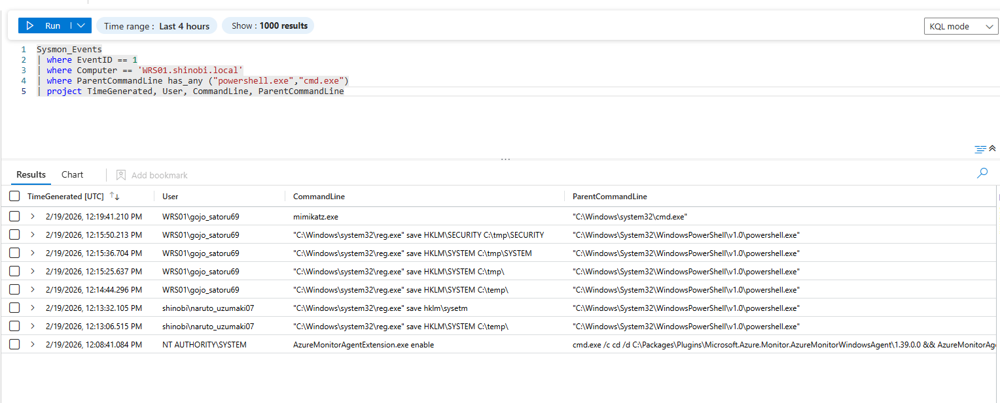

Domain Cached Credentials
Detection & Telemetry (Domain Cached Credentials Dumping)
- 1.
1. Overview
Attack Vector: The attacker utilized two primary methods to extract Domain Cached Credentials (DCC2) from the local workstation (WRS01). First, they used a "Living off the Land" technique by executing the native reg.exe utility to export the HKLM\SYSTEM and HKLM\SECURITY registry hives to the disk for offline decryption. Secondly, they executed mimikatz.exe to parse the cached credentials directly from local system memory and registry.
Key Log Sources:
- Sysmon Event ID 1 / Security Event 4688: Process Creation (Captures
reg.exeandmimikatz.exeexecution).
- Sysmon Event ID 11: File Creation (Detects the
.saveor exported registry files being written to disk).
- 2.
2. Scenario: Detecting Registry Hive Export (Reg.exe)
Objective: Detect the use of the native Windows registry tool (reg.exe) to manually export the SECURITY and SYSTEM hives. This is a common evasion tactic to avoid EDR memory scanning.
Logic: We monitor endpoint telemetry for the execution of reg.exe with the save argument, specifically targeting the HKLM\SECURITY and HKLM\SYSTEM keys.
KQL Query:
Sysmon_Events
| where EventID == 1
| where Computer == "WRS01.shinobi.local"
| where CommandLine has "reg"
| where CommandLine has "save"
| where CommandLine has_any ("HKLM\\SECURITY", "HKLM\\SYSTEM", "hklm\\sysetm")
| project TimeGenerated, User, Computer, CommandLine, ParentCommandLine
Analysis:
- Command: The Sysmon logs clearly capture the attacker executing
"C:\Windows\system32\reg.exe" save HKLM\SECURITY C:\tmp\SECURITYand"C:\Windows\system32\reg.exe" save HKLM\SYSTEM C:\tmp\SYSTEM.
- Context / Artifacts: Interestingly, the logs also caught a typographical error by the attacker
naruto_uzumaki07who attempted to run"C:\Windows\system32\reg.exe" save hklm\sysetmbefore successfully executing the correct path. Legitimate administrators rarely perform these manual hive exports to temporary directories, making this a high-fidelity alert.

- 3.
3. Scenario: Detecting In-Memory Extraction (Mimikatz)
Objective: Detect the execution of the Mimikatz binary or its specific command-line arguments used for dumping the cache.
Logic: While attackers may rename the binary, standard tools often retain their original names, metadata, or specific module syntax. We monitor Process Creation events for mimikatz.exe or the lsadump::cache command.
KQL Query:
Sysmon_Events
| where EventID == 1
| where Computer == "WRS01.shinobi.local"
| where Image has "mimikatz.exe" or CommandLine has "lsadump::cache"
| project TimeGenerated, User, Computer, Image, CommandLine, ParentCommandLine
Analysis:
- Execution: The Sentinel logs capture the execution of
mimikatz.exespawned from a standardcmd.exeshell by the userWRS01\gojo_satoru69.
- Conclusion: This indicates that the attacker had an interactive session on the host and dropped known malicious tooling to automate the extraction of the DCC2 hashes.

- 4.
4. Defensive Recommendations (Mitigation)
To protect shinobi.local against DCC2 credential dumping:
- Reduce Cached Logons Limit: By default, Windows caches the last 10 domain logons. You can reduce this limit via Group Policy (GPO).
- Path:
Computer Configuration -> Windows Settings -> Security Settings -> Local Policies -> Security Options
- Setting: Interactive logon: Number of previous logons to cache (in case domain controller is not available)
- Recommendation: Set this to
0for high-security desktops/servers that never leave the corporate network. For laptops, reduce it to2to minimize the attack surface.
- Restrict Local Administrator Privileges: The attacker must hold local Administrator or
SYSTEMlevel privileges to read theHKLM\SECURITYregistry hive. Strictly enforcing Least Privilege prevents the extraction phase entirely.
- Deploy ASR Rules: Enable the Microsoft Defender Attack Surface Reduction (ASR) rule "Block credential stealing from the Windows local security authority subsystem (lsass.exe)" to disrupt tools like Mimikatz from parsing memory.